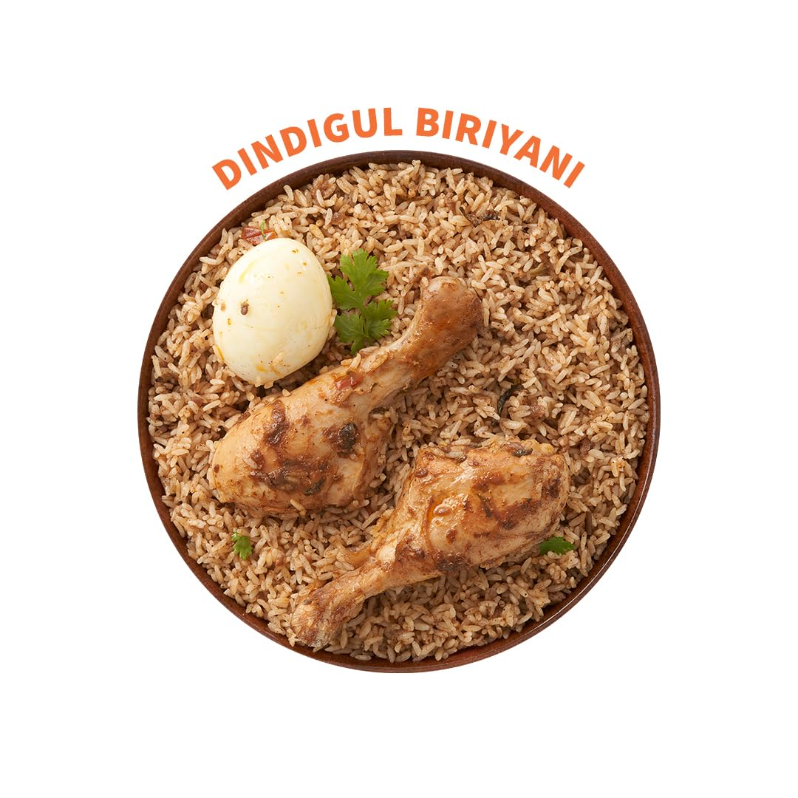

Dindigul Biryani recipe
Dindigul biryani is a flavorful South Indian rice dish hailing from Dindigul, Tamil Nadu. It's known for its unique spice blend, featuring biryani masala and aromatics like cloves and cardamom. Ghee and cashews add richness, while caramelized onions give it depth of flavor. This biryani is traditionally cooked with bone-in chicken for a delectable meal.

Ingredients
- For the Chicken Marinade:
- 1/2 kg chicken pieces (bone-in, preferably thighs and drumsticks)
- 1/2 cup yogurt
- 2 tbsp store-bought biryani masala powder
- 1 tsp red chili powder (adjust to your preference)
- 1/2 tsp turmeric powder
- 1 tsp ginger-garlic paste
- 1/4 tsp garam masala
- Salt to taste
- 2 tbsp vegetable oil
- For the Rice:
- 1.5 cups basmati rice, soaked for 30 minutes
- 3 tbsp ghee (or vegetable oil)
- 1 large onion, thinly sliced
- 1/4 cup cashews
- 1/4 cup golden raisins
- 2 cloves
- 2 green cardamoms
- 1 bay leaf
- Salt to taste
- Water (enough to cook rice)
Process
- Marinate the Chicken: Wash and pat dry the chicken pieces. In a large bowl, combine yogurt, biryani masala powder, red chili powder, turmeric powder, ginger-garlic paste, garam masala, and salt. Add chicken pieces and mix well to coat them evenly. Cover and marinate for at least 30 minutes, or preferably overnight for deeper flavors.
- Cook the Rice: Rinse the soaked basmati rice until the water runs clear. In a large pot, bring enough water (around 4 cups) to a boil. Add the rinsed rice, salt, and a few drops of oil. Cook according to package instructions or until the rice is 80% cooked but still has a slight bite. Drain the rice and spread it on a plate to cool slightly.
- Sauté the Chicken and Onions: Heat ghee (or oil) in a heavy-bottomed pot or pressure cooker. Add cloves, cardamom, and bay leaf. Saute for a few seconds until fragrant. Add sliced onions and fry over medium heat until golden brown. Remove the whole spices from the pot.
- Assemble the Biryani: Add the marinated chicken pieces along with any leftover marinade to the pot with cooked onions. Increase heat slightly and cook for 5-7 minutes, stirring occasionally, until chicken is browned on all sides. Add half of the cooked rice, followed by half of the cashews and golden raisins. Repeat with the remaining rice, cashews, and raisins.
- Cooking (Pot Method): Pour enough water (around 1 cup) to just moisten the rice. Cover the pot tightly with a lid and seal with foil if using a regular pot. Reduce heat to low and simmer for 20-25 minutes, or until the rice is fully cooked and flavors are absorbed.
- Cooking (Pressure Cooker Method): Close the pressure cooker lid and cook for 3 whistles on medium heat. Let the pressure release naturally for 10 minutes before opening the lid.
- Garnish and Serve: Once cooked, gently fluff the biryani with a fork. Take care not to break the rice. Garnish with chopped coriander leaves (optional). Serve hot with raita or your favorite chutney.
Tips
- Adjust the amount of red chili powder according to your spice preference.
- For a richer flavor, use ghee instead of vegetable oil.
- You can substitute store-bought biryani masala with a mixture of ground coriander, cumin, cloves, cardamom, cinnamon, and black pepper.
- Marinating the chicken for a longer duration enhances the flavors.
back to main page